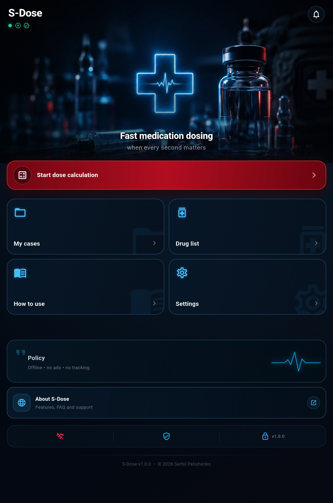
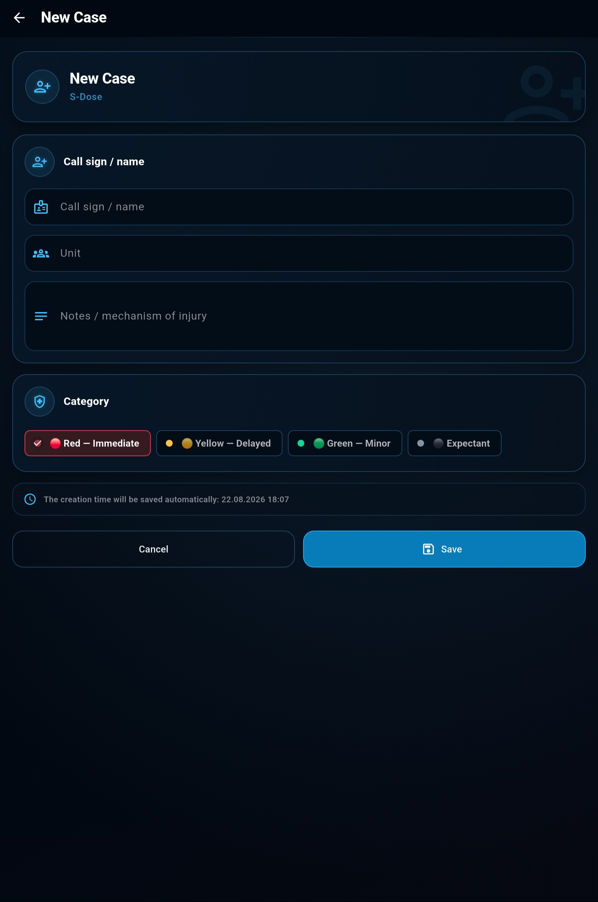
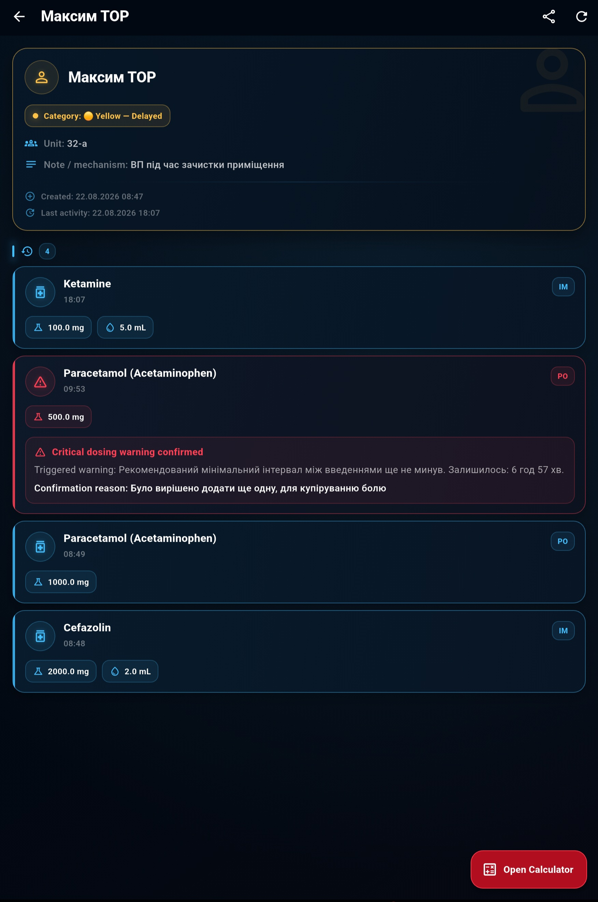
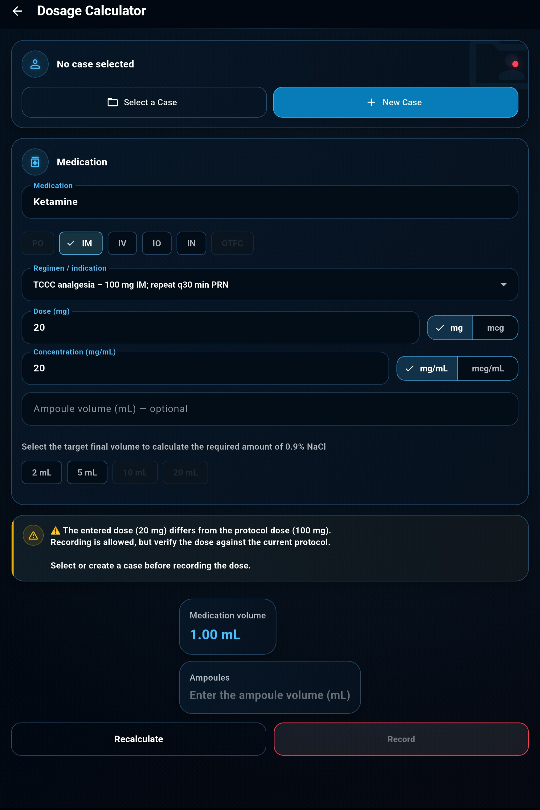
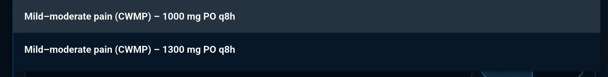
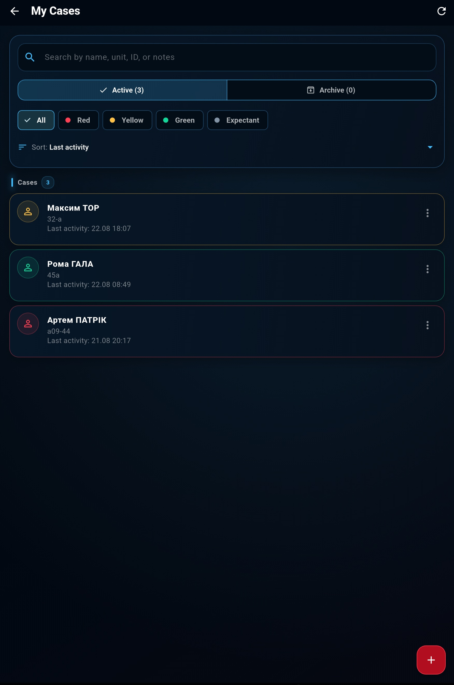
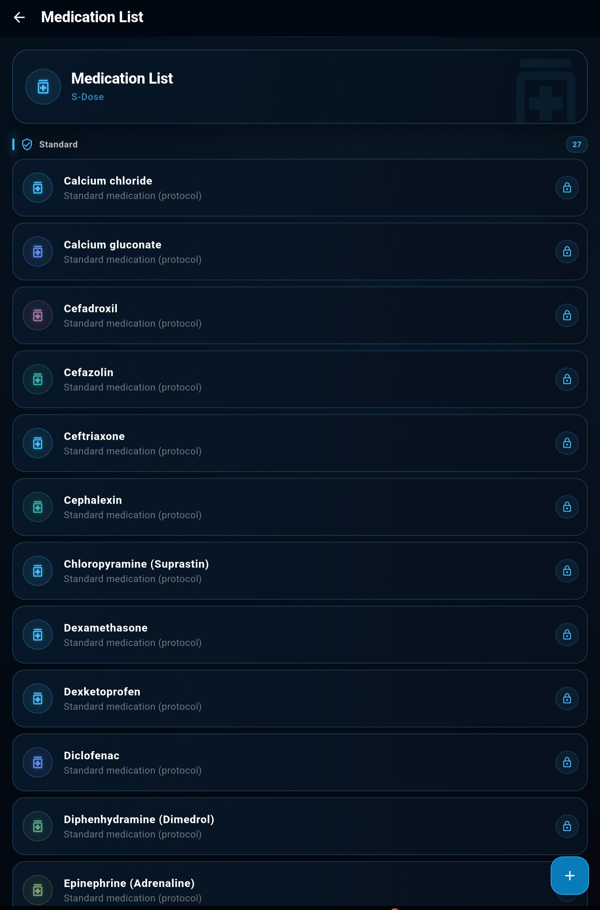
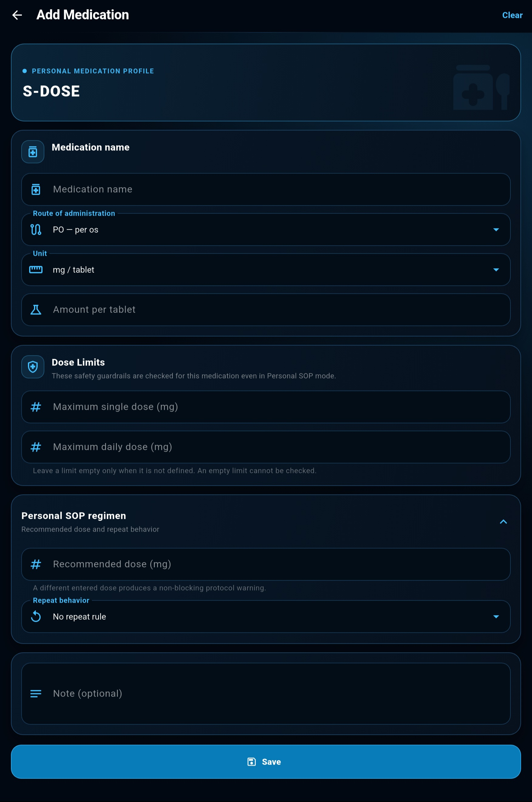
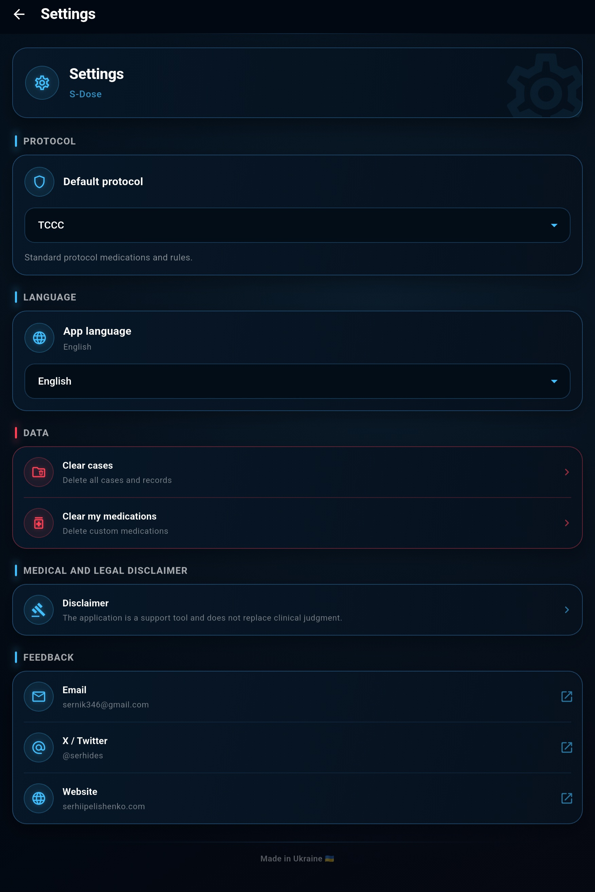

S-Dose
An offline medication reference, dose calculator, and administration log designed for rapid use in emergency and field settings.
Ukrainian and English · local data storage · no ads
© 2026 Serhii Pelishenko. S-Dose. All rights reserved.
About the App
Calculate and Record Doses with Fewer Steps
S‑Dose brings together a medication reference, dose calculations, critical limit checks, and an administration log in one consistent workflow for each case.
S‑DOSE IN ACTION
One case.
One case.
The entire workflow.
From selecting a medication and calculating the dose to checking limits and recording administration.
Core Features
Tools for Practical Use
S‑Dose's core features are organized around a single case and work together as one consistent workflow.
Dose Calculation
Calculate doses based on body weight, concentration, and route of administration.
Limit Checks
Check single-dose and daily limits, as well as the minimum dosing interval.
My Cases
A separate medication and administration history for each case.
Custom Medications
Add medications to the local reference to match your own SOP.
Explore the Interface
Select a section to view its main elements and purpose.
01 Home Screen

01
Start a Calculation
Opens the dose calculator, where you can create a case and calculate medication doses.
02
My Cases
Create, select, and review cases and their administration logs.
03
Medication List
A reference for standard and user-created medications, including routes, dosing, and limits.
04
Settings
Choose the language, protocol, and main app settings.
05
Disclaimer
Important information about the safe use and limitations of S‑Dose.
02 Create a Case

01
Call Sign or Name
Enter a name or call sign so you can quickly find the relevant case.
02
Unit
Add the unit or other information needed to identify the patient.
03
Notes
Describe the injury, mechanism of injury, exact date of the incident, or any other important details that should be retained.
04
Category
Select the case category: red, yellow, green, or expectant.
05
Automatic Creation Time
The case creation date and time are saved automatically.
03 Your Case List

01
Individual Cases
Each patient's data is stored in a separate case.
02
Search, Filters, and Sorting
Cases can be searched, filtered by category, and sorted.
03
Pinning Cases
Important cases can be pinned to the top of the list.
04
Editing and Deletion
Case data can be edited, archived, or deleted.
05
Administration Timeline
The log shows the medication, dose, route, and time of administration.
06
Case Context
The category, unit, and notes remain available throughout the workflow.
04 Dose Calculator

01
Case Selection
Select an existing case or create a new one. A case is required to save the calculation to the administration log.
02
Medication Selection
Find and select a medication from the built-in reference or your custom list.
03
Route of Administration
Select an available route of administration: PO (oral), IM (intramuscular), IV (intravenous), IO (intraosseous), IN (intranasal), or OTFC (oral transmucosal fentanyl citrate).
04
Medication Dose
Enter the required dose to be administered to the patient and select the unit of measurement—milligrams or micrograms.
05
Concentration
Enter the medication concentration or the amount contained in a tablet, together with the relevant units.
06
Ampoule and Dilution
Specify the ampoule volume (or tablet strength) and select the final diluted solution volume—the capacity of the syringe you will use.
08
Calculation Result
S‑Dose will determine the medication volume, the required number of ampoules, and the diluent volume.
07
Review and Save
The app will check the dose, daily limit, and interval between administrations. The result can then be saved to the case log.

09
Preset Medication Regimens
Preset regimens are already available for some medications in S-Dose. After you select a regimen, the calculator automatically enters the specified dose, unit of measurement, route of administration, and the appropriate dosage form.
- Mild–moderate pain
- Indication: mild to moderate pain.
- CWMP
- Combat Wound Medication Pack—a regimen based on the medications provided to a casualty.
- 1000 mg / 1300 mg
- Single medication dose. Different values correspond to the available regimen or dosage-form options.
- PO
- Per os—oral administration.
- q8h
- Administer or take the medication every 8 hours.
Notes
- Context-Specific Restrictions. S-Dose adjusts the available parameters according to the selected route of administration. For example, only the applicable 2 mL and 5 mL syringe options are available for intramuscular administration.
- Available Routes of Administration. Permitted routes of administration are predefined for medications in the built-in reference. Routes that are not specified for a particular medication cannot be selected.
- Dose and Interval Checks. Before saving, S-Dose checks the single dose, the total amount administered during the previous 24 hours, and the time elapsed since the last administration. If the medication's defined limits are exceeded, the app displays an additional warning. Important: the warning does not prevent further action. If the clinical situation requires a dose outside the defined limits, you can confirm the decision and save the entry. You may also add a note explaining the reason for the decision.
- Input Verification. The result depends on the entered dose, concentration, and units of measurement. If an extra digit is entered accidentally, the calculator may display a disproportionately large result—an indication that all fields should be checked again. The app cannot automatically detect every input error.
- Administration Date and Time. The date and time of each entry are determined automatically from the phone's system settings. S-Dose does not set or adjust them. Important: when operating in an environment affected by GPS spoofing, the phone may determine its location incorrectly. If automatic location-based time-zone detection is enabled, this may result in incorrect times in the administration log. Before use, verify the phone's system date, time, and time zone.
- Decision-Support Tool. S-Dose assists with calculations and highlights potential errors, but it does not replace clinical judgement, medication verification, or current medical protocols.
05 Your Saved Cases

01
Case Details
The top of the screen shows the name or call sign, category, unit, note, creation date, and most recent activity.
02
Administration Log
All saved administrations are displayed chronologically within the selected case.
03
Administration Details
Each entry shows the medication, dose, route of administration, calculated volume, and exact time.
04
Saved Warnings
If an administration is recorded after a critical warning, the warning remains visible in the log together with the stated reason.
Important: the acknowledged warning and the reason entered by the user are saved with the record. This provides visibility not only into the administered dose, but also into the context in which the decision was made.
05
Continue Working
The “Open Calculator” button returns you to dose calculations for the current case.
06
Case Context
The category, unit, and notes remain available throughout the workflow.
07
Sharing Case Data
The “Share” button at the top of the screen creates a .txt file containing the patient's key details and administration log. It can be shared using any method available on the phone, including a messaging app, email, Bluetooth, or another app.
Important: the exported file may contain the patient's personal and medical data. Before sending it, verify the file contents, the recipient, and the security of the selected transfer method.06 Medication Reference

01
Standard Medications
S-Dose includes a built-in medication list. Available routes, dosing regimens, and limits used by the app in TCCC mode are predefined for these medications.
02
Protected from Changes
Standard medications are marked with a lock icon. They cannot be edited or deleted, preventing accidental changes to the protocol parameters built into the app.
03
Custom Medications
The “+” button lets you create a custom medication by specifying its name, route, form, concentration, dosing, limits, and repeat-administration rules.
04
Personal / SOP
User-created medications become available in the calculator in “Personal / SOP” mode. This allows S-Dose to be adapted to a local protocol or an institutional or unit SOP.
Important: Custom medications and their parameters are defined by the user. Before use, verify that they comply with the current local SOP or another current authoritative source.07 Create a Custom Medication

01
Core Medication Parameters
Enter the medication name, route of administration, and form/unit. Depending on the selected form, S-Dose lets you specify the concentration or the amount of active ingredient in a tablet, capsule, spray, or other available form.
02
Dose Limits
You can set a maximum single dose and maximum daily dose for a custom medication. These values are used by the S-Dose validation system even in “Personal / SOP” mode.
Important: If no limit has been defined for a medication, the field may be left blank—but the app will then be unable to check that value automatically.
03
Custom SOP Regimen
If needed, you can enter a recommended dose based on the local SOP. If the dose entered by the user differs from the defined regimen, S-Dose can display an appropriate warning.
04
Repeat-Administration Rules
You can define the repeat-administration logic for a medication:
For regimens with a time interval, you can also set the earliest permitted repeat dose.
05
Repeat-Administration Controls
You can define how S-Dose responds when an administration is recorded too early: display a standard warning or require critical confirmation.
Additional rules are also available:
“Require reassessment before repeat administration” —reminds the user to assess the casualty's condition and the effect of the previous administration.
“Requires prior administration”—used for regimens that cannot be the first relevant administration in a case.
06
Important:
Custom medication parameters are defined by the user. S-Dose does not validate them against an external clinical source.
Before using a custom regimen, verify the dosing, limits, and repeat-administration rules against a current SOP, protocol, or other authoritative source.
Note
You can add a custom text note to the medication—for example, details about the local SOP, medication preparation, or other information important to the user.
08 Settings

01
Default Protocol
Defines the mode S-Dose uses for medications and dosing rules.
TCCC —uses the built-in standard medications and their configured protocol rules.
Personal / SOP —also allows the use of custom medications and user-created regimens.
02
App Language
Lets you switch the S-Dose interface between Ukrainian and English.
When the system setting is selected, the app uses the device language if it is supported.
03
Local Data Management
In this section, you can separately delete:
S-Dose asks for confirmation before deletion because these actions cannot be undone.
04
Medical and Legal Disclaimer
Opens the full S-Dose Disclaimer, which explains the app's intended purpose, calculation limitations, the need to independently verify medical data, and the user's responsibilities.
05
Feedback
This section lets you contact the developer or visit official S-Dose resources:
Links open in the relevant apps or the device's browser.
06
Licenses
The Licenses section provides information about Flutter and the third-party software libraries used in S-Dose, together with their applicable license terms.
Data Storage
Cases, medication administration records, and custom medications are stored locally on the device. Deleting the relevant data in Settings removes it from S-Dose's local storage.
Safety and Responsibility
A Support Tool, Not a Substitute for Clinical Judgement
S-Dose is a reference and calculation tool. It does not replace professional medical assessment, official protocols, medication manufacturers' instructions, or the user's clinical judgement.
FAQ
Frequently Asked Questions
Brief answers about how the app works, how data is stored, and how custom settings are used.
Does S‑Dose work without an internet connection?
Yes. The medication reference, dose calculator, cases, and administration log all work locally on the device.
Where is the data stored?
Operational data is stored locally on the user's device and is not transmitted to the app's author.
Can I add custom medications?
Yes. Users can create custom medication entries, define dosing parameters, and link them to their own SOP.
When will the app be available?
The current app version and information about available installation methods are published on this page.
Does S‑Dose replace clinical judgement?
No. S‑Dose is a supporting tool for calculations and documentation. The final decision regarding medication use must always be made by a qualified user.
Can case information be shared?
Yes. Case information can be exported as a TXT file and shared using any method available on the device. Before sharing it, verify that the file does not contain the patient's personal data.
Feedback
Help Improve S-Dose
Report a bug or an unclear workflow, or suggest a feature you would find useful.
Do not send patients' personal or medical data.
SUPPORT THE PROJECT
Help S‑Dose Grow
S‑Dose is an independent, non-commercial project and remains free regardless of whether support is provided.
If you would like to provide financial support for its development, contact the author to discuss the details individually.
Funds received may be used for testing, technical infrastructure, and the preparation of S‑Dose updates.
Discuss Support
Support is voluntary and does not unlock additional features in the app.
Collaboration & Contact
Open to collaboration
and new initiatives.
Have an idea, a project, or need a medical or educational solution? Let’s discuss how we can work together.